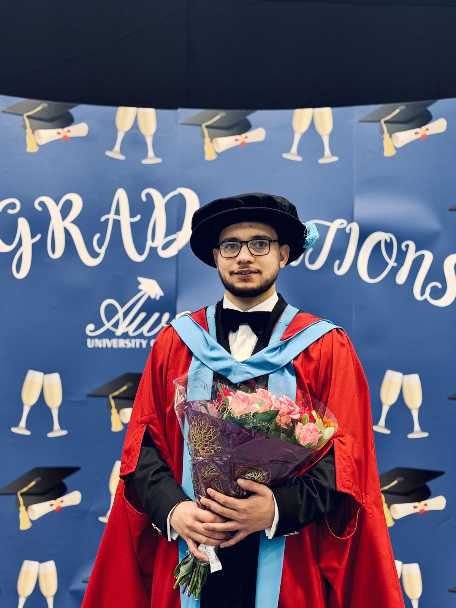

About
Engineering the transition to clean power
From a first-year undergraduate arriving in the UK in 2020 to a PhD in hydrogen combustion in 2026 and postdoctoral research at Durham University: here is the path, the philosophy and the person behind the research.
My journey
I moved to the United Kingdom in 2020 to study Mechanical Engineering at the University of Huddersfield, graduating with First Class Honours in 2022. My final-year project — heat and mass transfer in a plate-and-frame desorber for absorption refrigeration — was my first real taste of thermofluids research, and it set the direction for everything since.
In 2023 I progressed directly to a PhD, supported by a Vice-Chancellor's PhD Scholarship awarded for research potential. My doctoral work investigated hydrogen–diesel dual-fuel compression-ignition engines through 3D CFD, 1D engine simulation and experimental testing, validating models against measurements from a JCB test engine. I passed my viva with minor corrections in April 2026 and the PhD was awarded in August 2026, for a thesis titled Assessment of Hydrogen–Diesel Dual-Fuelled Compression-Ignition Engines.
Research never happened in isolation. Alongside the PhD I worked as a Research Assistant on an EPSRC IAA assistive-technology project with Barts Life Sciences (NHS), carrying a novel reconfigurable wheelchair from concept to physical prototype, and spent three years teaching undergraduate engineers — more than 60 students across tutorials, CFD practicals and wind-tunnel laboratories.
Along the way I published eight Q1 journal papers (lead author on seven), presented at nine international conferences across four countries, secured over £61,000 in competitive funding, and began reviewing for Energy and Applied Energy. In 2026 the next chapter began: I joined the Digital Twin Lab at Durham University as a Postdoctoral Research Associate in Prof. Dawei Wu's group, where I model hydrogen and dual-fuel marine engines and work on the SEASTARS, Karachi Port and HI-ACT projects (see my Durham work).

Graduation day. Doctor of Philosophy, University of Huddersfield, November 2026.
Research philosophy
How I approach engineering research
Validation before prediction
A simulation is only as credible as the measurements it has been tested against. Every modelling chain I build starts and ends with experimental data — in my PhD, measurements from a JCB test engine anchored both the 1D and 3D models.
Fidelity where it matters, speed where it counts
High-fidelity CFD answers deep questions but cannot sweep a design space. I pair detailed models with physics-informed surrogates so that optimisation becomes practical without sacrificing physical insight.
Data-driven, physics-anchored
Machine learning in engineering should respect the governing physics. Methods like SINDy appeal to me precisely because they produce interpretable, equation-based models rather than black boxes.
Honest reporting
Limitations, assumptions and uncertainties belong in the open. I would rather present a modest result clearly than an inflated one vaguely — in papers, in teaching and in collaboration.
Values & ways of working
Collaboration across boundaries
The work I am proudest of crossed disciplinary lines: a clinical partnership with an NHS-linked team on assistive technology, funding bids co-authored with industrial consortia for Horizon Europe and Innovate UK, and teaching that turned research software into learning materials for undergraduates.
Three years of supporting a large, diverse and international student cohort shaped how I communicate — adapting explanations to very different starting points, and treating clarity as a professional skill rather than an afterthought.
Beyond research
Conference travel across the UK, Turkey, the UAE and Australia turned into a genuine love of exploring new places (see the gallery). Outside the lab I create bilingual English–Urdu content about travel, faith and self-discovery — a creative counterweight to the precision of engineering.
Milestones
- 2020
Moved to the UK
Began BEng Mechanical Engineering at the University of Huddersfield.
- 2022
BEng (Hons), First Class
Final-year project on heat and mass transfer in a plate-and-frame desorber.
- 2023
PhD began · Vice-Chancellor's Scholarship
Started doctoral research on hydrogen–diesel dual-fuel engines and a three-year teaching assistantship.
- 2023–24
Research Assistant, EPSRC IAA
MA-DRW reconfigurable wheelchair with Barts Life Sciences (NHS), concept to prototype.
- 2024
First international presentations
ICEESEN 2024 (Turkey) and ICASF 2024 (Abu Dhabi); completed LTHE Part 1.
- 2025
Publication momentum
Papers in RSER (IF 18.0), Energy, IJHE and CSTE; two papers at ICMIAM 2025, Australia.
- Apr 2026
PhD viva passed
Minor corrections; eight Q1 journal papers; two papers at ICES 2026, Istanbul.
- Aug 2026
PhD awarded
Followed by two papers at ICMIAM 2026 in Huddersfield in September.
- Oct 2026
Postdoc at Durham University
Postdoctoral Research Associate, Digital Twin Lab, Prof. Dawei Wu's group.
- Nov 2026
Doctoral graduation
Graduated as a Doctor of Philosophy at the University of Huddersfield.
The full picture, on one page
Download my CV, or explore the research and teaching portfolios in detail.